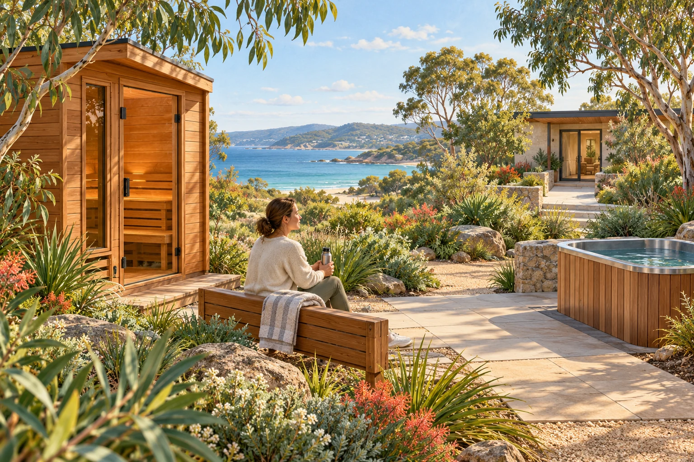

Time recognised, without a monetary price.
One C-Hour recognises one verified elapsed hour of voluntary human contribution. Communities shape their own incentives: access to a private or community event, a shared tool, equipment or another locally agreed opportunity. The purpose is a stronger social fabric. [P4]
- C-Hours have no monetary equivalent.
- They are neither sold nor transferred.
- Each person’s elapsed time is counted once across linked projects.
- Paid work, money, machine time and outcomes keep separate records.
- Essential assistance remains independent of any contribution balance.
A person volunteering for an hour at a repair gathering records that hour through the host’s agreed process. A paid tradesperson keeps their ordinary paid-work record. AI processing during the session creates no additional human C-Hours. A successful repair is a valuable outcome with its own record.
The community chooses a fair arrangement.
A host might offer access to a music evening or shared equipment. Availability, access requirements, upkeep and the terms of the offer are worked out locally. Contribution recognition creates no claim over someone else’s property or automatic place at an event.
Communities also consider how people with different abilities, caring commitments and available time participate. The purpose is reciprocity and belonging, with room for rest, rather than a universal score of personal worth.
During recovery, helping to organise a gathering may be meaningful for one person. Another needs assistance without contributing. Both remain part of the community.
Healthy De-Slop is one possible connection.
Healthy De-Slop is a connected proposal for community wellbeing and reflection. Locally developed offerings might include sauna, cold therapy, hot and cold experiences, and other suitable activities. A community could choose access to an agreed offering as one reciprocal opportunity. No facility, clinical service or access agreement is established here. [P13]

The proposal also includes adult hyperbaric oxygen therapy, or HBOT: oxygen treatment under increased pressure. Clinical suitability, assessment and delivery belong with qualified providers. The Royal Brisbane and Women’s Hospital hyperbaric service provides a clinical reference; its inclusion implies no Aura partnership. [R24]
HBOT follows its own clinical pathway. A C-Hour record establishes neither eligibility nor treatment benefit. Sauna and cold exposure also need arrangements appropriate to the person, activity and actual provider. The disaster proposal makes no clinical recovery claim for these experiences.